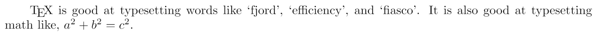

The TeX family tree: LaTeX, pdfTeX, XeTeX, LuaTeX and ConTeXt
The LaTeX story goes back all the way to 1977 when Donald Knuth first understood the need for a high quality typesetting program. It's a remarkable testament to the quality of LaTeX that the system he conceived back then is still the best tool for the job today, although many useful additions have been made in the decades since. In fact, LaTeX is one of these additions to the original system that Donald Knuth developed, which was called TeX.
To keep your street-cred in the LaTeX-world you've got write it with a capital T and X, and pronounce it like Lay-Tech. This is because the X in TeX is actually a capital Chi (χ) from Greek. Latex with a normal capitalisation and pronunciation is a type of rubber!
The original TeX
There are a large family of tools which are now derived from TeX, and it can look like a list of nonsense words on first sight: LaTeX, pdfTeX, XeLaTeX, LuaTeX, ConTeXt, and so on. The ancestor of all of these is of course the original TeX program by Knuth. This takes a document in plain text and transforms it into a beautifully typeset document. Knuth was quite particular about typesetting and the attention to detail in TeX is clear. An example TeX document might look something like this:
\TeX{} is good at typesetting words like `fjord', `efficiency',
and `fiasco'. It is also good at typesetting math like,
$a^2 + b^2 = c^2$.
\bye
The output of this after running it through the TeX program is:

Notice how the combinations of letters 'fi', 'fj', and 'ff' in the example words run together in a pleasant way, and how the mathematics symbols are well spaced. On a larger scale, TeX does a very good job of breaking lines in the appropriate places to created well justified text, with hyphenations where appropriate.
Not only does it typeset text nicely, it also has a selection of commands, like
\bye and \TeX in the example above. These can do simple things like change
the font size, or change the way text is laid out, as well as much more powerful
things like keeping a section count to cross reference your pages, or
automatically building up a table of contents. The TeX program has about 300
commands built in, but other commands can be defined within it. Donald Knuth
wrote another 600 or so useful commands from within TeX, in a package called
Plain TeX which makes some common typesetting tasks easier.
LaTeX
The commands in TeX and Plain TeX are still quite basic and it isn't easy to do
complicated things with them. To help with this, Leslie Lamport created
LaTeX in the early 1980s to provide a higher
level language to work in than TeX. LaTeX is a set of commands defined in terms
of the underlying TeX commands, often at many many layers of abstraction. All of
the commands you use in a LaTeX document are actually just complicated sets of
TeX commands underneath, unless of course you use a TeX command directly!
Concepts like packages (\usepackage{...}), environments (\begin{environment}
... \end{environment}), and document classes (\documentclass{...}) were all
introduced by Leslie Lamport in LaTeX.
By creating a standardised package system for LaTeX, Leslie Lamport allowed the community to grow huge. There are now thousands upon thousands of LaTeX packages available to let you typeset anything from subfigures to knitting patterns. There are also many document classes available for different types of document, whether your are writing a book, a lab report or a CV. Many publishers and journals have their own custom document classes that style their documents how they want.
pdfTeX
The TeX program is remarkably stable for a piece of software over 20 years old; Knuth declared that it was feature complete in 1989, and only bug fixes have been made since. Of course, this has not stopped the significant and ongoing development of LaTeX, because that is written in TeX itself. In fact, the stability of TeX has allowed packages like LaTeX which have been built on top of it to thrive.
This isn't to say the underlying TeX program hasn't seen any advances in the last 20 years. Far from it in fact, it's just that improvements have been made alongside TeX, with the original TeX left stable. The most important improvement of the 1990s was the creation of pdfTeX by Hàn Thế Thành for his PhD thesis. The original TeX program outputs the typeset document into a custom format called DVI (DeVice Independent format), that can later be turned into a PostScript file for printing. However, the PDF format came along in 1993 and we can see today that it clearly won as the better format over PostScript. There are lots of features which make PDF better, such as hyperlinks between sections, a section of metadata that lets you see a table of contents in left hand side of your PDF viewer, and support for a wider and more modern range of image formats. pdfTeX is a modification of TeX which allows it to output to PDF directly and so take advantage of these extra features.
When you install a LaTeX distribution on your system today, it actually comes
with two different programs: tex, and pdftex. It also comes with another two
programs on top of these: latex and pdflatex, but these are actually just
wrappers around tex and pdftex respectively. These first load the LaTeX
packages before processing your document but are still TeX underneath. If you
run latex or tex then you will get a DVI file which you can turn into a
postscript file or a PDF, but if you run pdflatex you will get a PDF directly.
Mostly, pdftex and pdflatex are improvements over tex and latex, but
there is one downside. The original TeX and DVI format have support for
Encapsulated PostScript files (.eps) because these can easily be included in
PostScript files (produced by converting .dvi files to Postscript via Dvips). However, pdftex cannot include EPS files, and you should
instead use PDFs (which can be produced from EPS files with the command epstopdf
which generally comes with LaTeX distributions). In exchange for this downside
though, pdfTeX adds support for .png, .jpg and .pdf images, whereas the original
TeX only supports .eps (via Dvips).
XeLaTeX and LuaTeX
So far we have seen that TeX has evolved in two different ways since its beginning: With the addition of easier to use commands on top of the original system (LaTeX), and with updates to the underlying program to support PDF output (pdfTeX). The story does not stop there however and there have been continuing efforts to modernize TeX. In 2004 Jonathon Kew created XeTeX, which is another modification of the underlying TeX engine, this time to support a wider range of characters beyond just plain English numbers and letters, and to include support for modern font formats. This makes writing in foreign languages much easier, and also lets you use fonts within LaTeX which were traditionally only available to your word processor.
LuaTeX is an attempt to extend the original TeX program with a more sensible programming language. While in principle you can do absolutely anything from within TeX, in practice it's a very clumsy programming language to work with, if it can even be called a programming language at all. Much of the internals of LaTeX is complicated and hard for outsiders to understand due to having to work only in TeX. LuaTeX is extended with the eponymous scripting language, Lua, which is a simple and stable language, ideal for writing complicated macros. As of 2012, it's still in active development and is its API is liable to change, but it still very usable.
ConTeXt
We've mentioned LaTeX as an extension to the commands available in TeX, but it's
not the only package that has extended TeX in a significant way.
ConTeXt is another system which
was created in 1990 by Hans Hagen. LaTeX aims to separate the user from having
to make decisions about typography and layout (you type \section and \emph
but you don't worry about what these do - that's left to the document class or
layout). On the other hand, ConTeXt aims to provide an easy interface to
advanced typography features. Sadly I don't know as much about ConTeXt as I
would like, so I can't elaborate much further, but if I ever get round to
experimenting with it more I'll be sure to write up my findings.
As a final historical note, I should mention
AMSTeX which was an extension to
the Plain TeX macros and was used by the American Mathematical Society (AMS)
from 1982 to 1985. Its legacy survives in AMS-LaTeX packages which are a
staple of many LaTeX documents: \usepackage{amsmath}.
The Future
What will the future hold for TeX and LaTeX? I don't know yet, but as Alan Kay once said:
The best way to predict the future is to invent it.
With ShareLaTeX we hope to improve TeX and LaTeX in a third direction, by bringing significant improvements to the LaTeX workflow. Despite being over 20 years old, LaTeX is still largely a command line program that must be used in an awkward cycle of writing, compiling and checking the output. Methods of collaboration tend to involve clunky email messages rather than the streamlined processes available for word processing like Google Documents.
Overleaf guides
- Creating a document in Overleaf
- Uploading a project
- Copying a project
- Creating a project from a template
- Using the Overleaf project menu
- Including images in Overleaf
- Exporting your work from Overleaf
- Working offline in Overleaf
- Using Track Changes in Overleaf
- Using bibliographies in Overleaf
- Sharing your work with others
- Using the History feature
- Debugging Compilation timeout errors
- How-to guides
- Guide to Overleaf’s premium features
LaTeX Basics
- Creating your first LaTeX document
- Choosing a LaTeX Compiler
- Paragraphs and new lines
- Bold, italics and underlining
- Lists
- Errors
Mathematics
- Mathematical expressions
- Subscripts and superscripts
- Brackets and Parentheses
- Matrices
- Fractions and Binomials
- Aligning equations
- Operators
- Spacing in math mode
- Integrals, sums and limits
- Display style in math mode
- List of Greek letters and math symbols
- Mathematical fonts
- Using the Symbol Palette in Overleaf
Figures and tables
- Inserting Images
- Tables
- Positioning Images and Tables
- Lists of Tables and Figures
- Drawing Diagrams Directly in LaTeX
- TikZ package
References and Citations
- Bibliography management with bibtex
- Bibliography management with natbib
- Bibliography management with biblatex
- Bibtex bibliography styles
- Natbib bibliography styles
- Natbib citation styles
- Biblatex bibliography styles
- Biblatex citation styles
Languages
- Multilingual typesetting on Overleaf using polyglossia and fontspec
- Multilingual typesetting on Overleaf using babel and fontspec
- International language support
- Quotations and quotation marks
- Arabic
- Chinese
- French
- German
- Greek
- Italian
- Japanese
- Korean
- Portuguese
- Russian
- Spanish
Document structure
- Sections and chapters
- Table of contents
- Cross referencing sections, equations and floats
- Indices
- Glossaries
- Nomenclatures
- Management in a large project
- Multi-file LaTeX projects
- Hyperlinks
Formatting
- Lengths in LaTeX
- Headers and footers
- Page numbering
- Paragraph formatting
- Line breaks and blank spaces
- Text alignment
- Page size and margins
- Single sided and double sided documents
- Multiple columns
- Counters
- Code listing
- Code Highlighting with minted
- Using colours in LaTeX
- Footnotes
- Margin notes
Fonts
Presentations
Commands
Field specific
- Theorems and proofs
- Chemistry formulae
- Feynman diagrams
- Molecular orbital diagrams
- Chess notation
- Knitting patterns
- CircuiTikz package
- Pgfplots package
- Typesetting exams in LaTeX
- Knitr
- Attribute Value Matrices
Class files
- Understanding packages and class files
- List of packages and class files
- Writing your own package
- Writing your own class